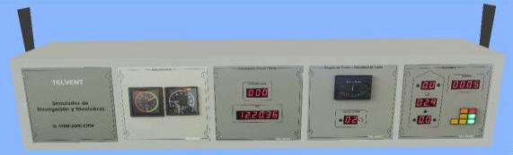
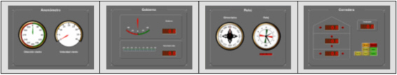

Panel de Indicadores
El panel de indicadores se sitúa en la parte superior del puente para permitir al alumno un acceso rápido a los datos de navegación. Los módulos que integran el panel pueden ser reales (hardware) o simulados (software).
Versión Hardware:
Este panel está integrado por los siguientes módulos:

Versión Software:
Este panel está integrado por los siguientes módulos:
